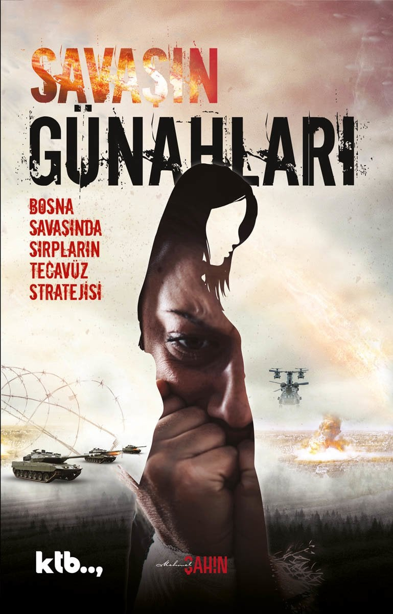
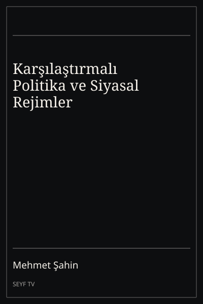

Kitapları


Kosova Krizi, Balkanlar ve Avrupa
Satın al

Akdeniz Jeopolitiği ve Enerjinin Geleceği
Satın al

Hitler Tehdidi - Türk Alman İlişkilerinde Bir Kriz Dönemi
Satın al
Kurgu ve Hakikat
Satın al

Osmanlı'da Elitizm
Satın al

Savaşın Günahları: Bosna Savaşında Sırpların Tecavüz Stratejisi
Satın al
